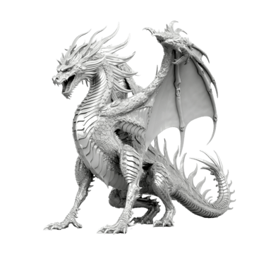
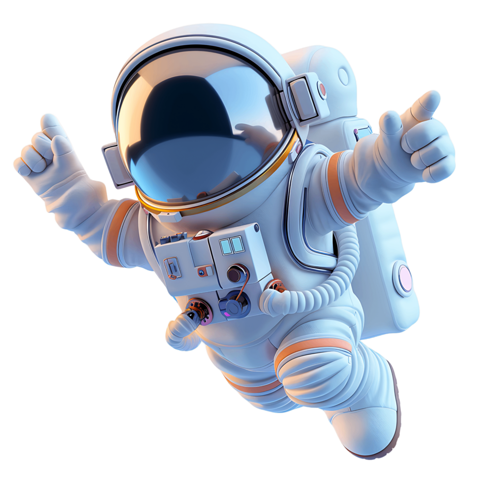

In Western stories, dragons are often giant, fire-breathing monsters with wings that hoard treasure and fight heroes. In contrast, Eastern traditions—such as Chinese folklore—view dragons as wise, wingless water spirits that bring good luck, rain, and prosperity. While these magical beasts are entirely fictional, stories about them may have been inspired by ancient discoveries of dinosaur and large mammal fossils.

An astronaut is a highly trained professional who travels into outer space to conduct scientific research, maintain equipment, and explore the cosmos. The word comes from Greek roots meaning "star sailor". These explorers spend years studying subjects like math and science before undergoing intense physical and mental training. While in space—often living aboard stations like the International Space Station—they experience weightlessness, wear specialized spacesuits for protection, and perform critical experiments that help humanity understand our universe and planet.